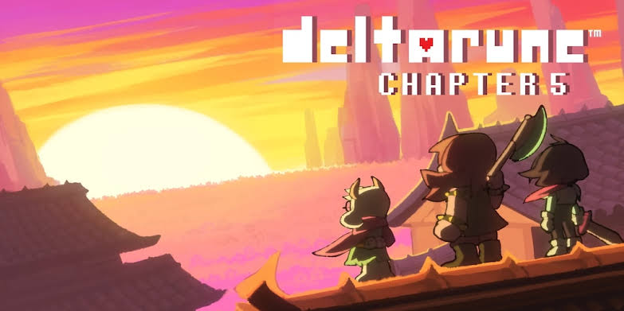
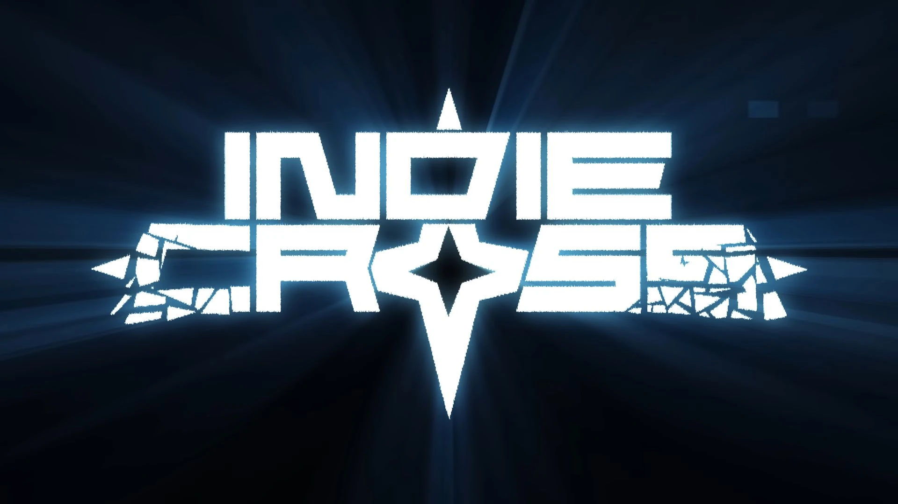
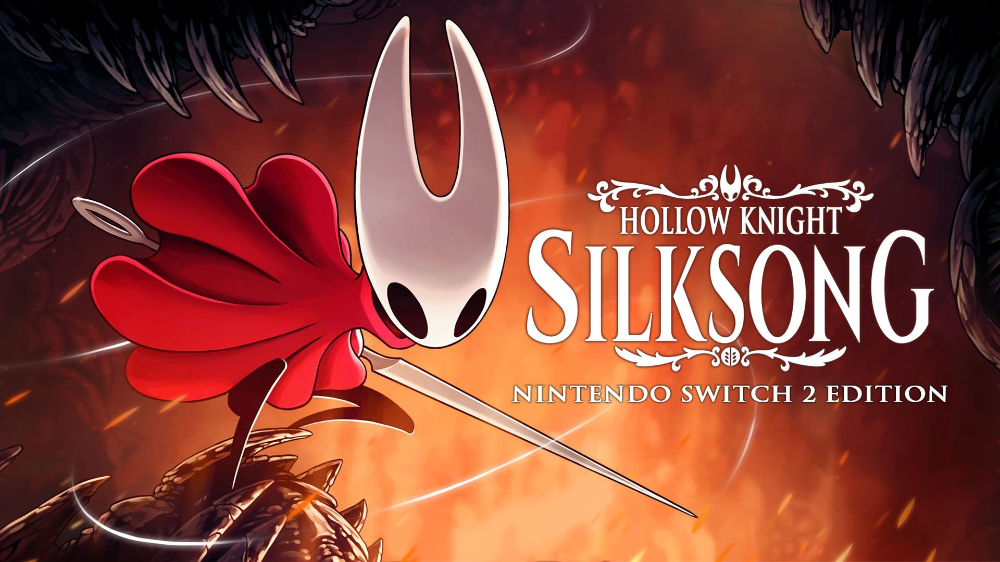

DELTARUNE CAPITULO 5
El masivo hype para el capitulo 5 y sus implicaciones para DELTARUNE
Deltarune la esta rompiendo en todos lados con su lanzamiento del capitulo 5 donde se presentaron diversos eventos que dejaron al fandom atonito
Deltarune la esta rompiendo en todos lados con su lanzamiento del capitulo 5 donde se presentaron diversos eventos que dejaron al fandom atonito

La increible serie indie. Indie Cross, el dia de hoy libera su segundo capitulo siendo un increidulo boom para el fandom

Silksong, el famoso juego indie del universo de Hollow Knight, logro llegar hasta nintendo switch 2 como contenido descargable apartir de Mayo 10!

A raro que puede sonar una entrega sobre caminar con tus amigos, resulto ser el juego mas innesperado dentro de steam, sus criticas son demasiado positivas por parte de la comunidad!